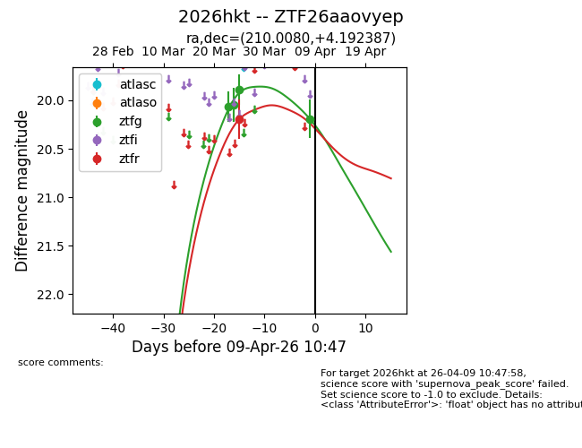
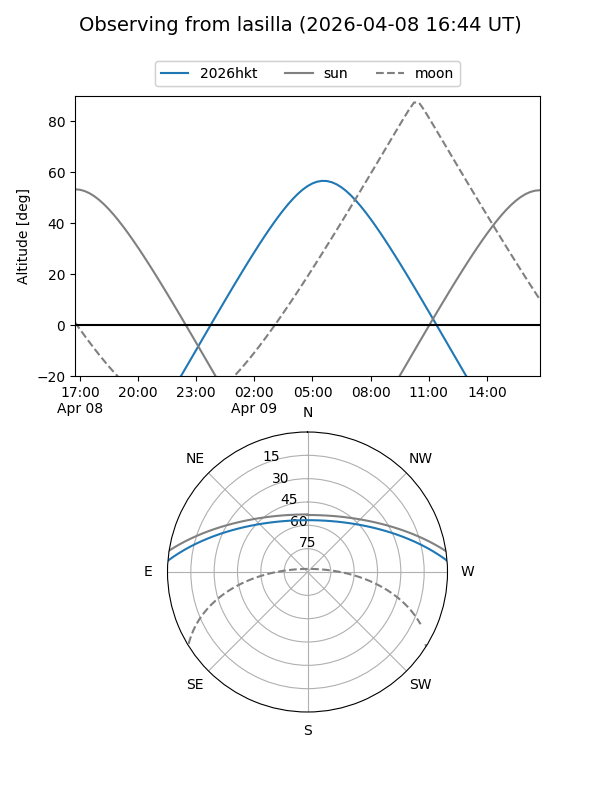
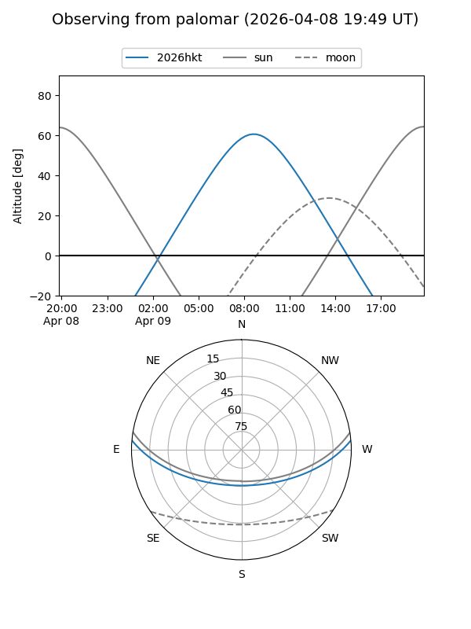
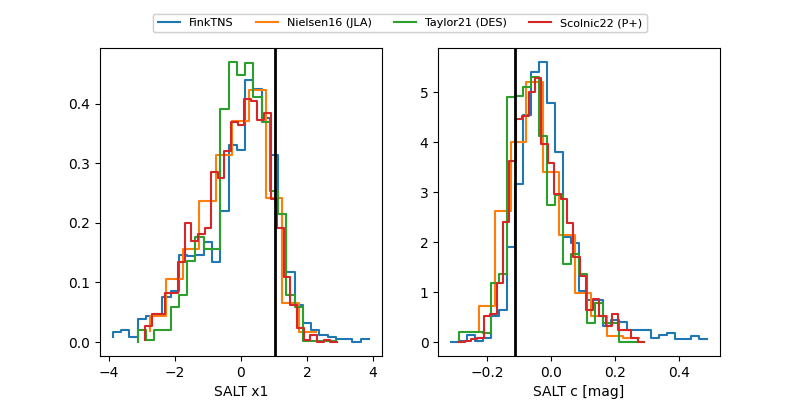

2026hkt
Target 2026hkt at 2026-04-09 10:53
Aliases and brokers:
FINK: link
Lasair: link
ALeRCE: link
TNS: link
YSE: link
alt names
ZTF26aaovyep (ztf,fink_ztf)
2026hkt (tns,yse)
Coordinates:
equatorial (ra, dec) = 210.0080,+4.19239
equatorial (HMS+DMS) = 14:00:01.93,+04:11:32.59
galactic (l, b) = (341.4472,+61.82162)
Flags:
Photometry:
last ztfg=20.19, ztfr=20.20
4 ztfg, 1 ztfr detections
Lightcurve

Visibility


Additional plots
